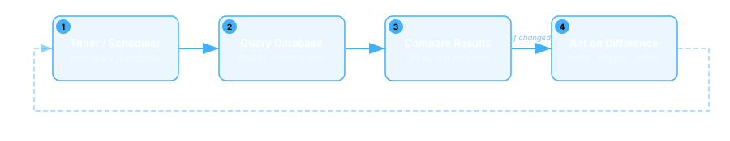
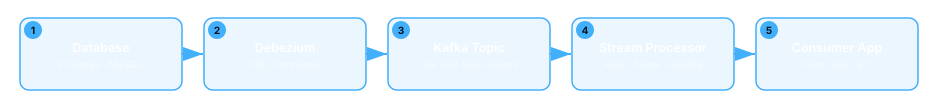
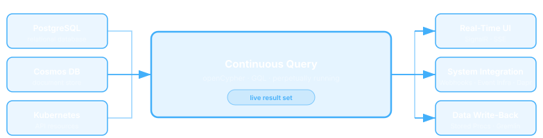
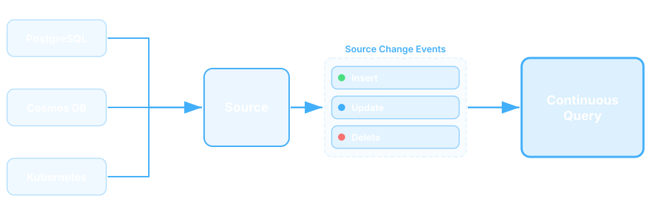
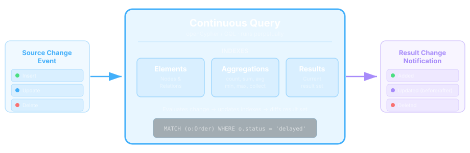
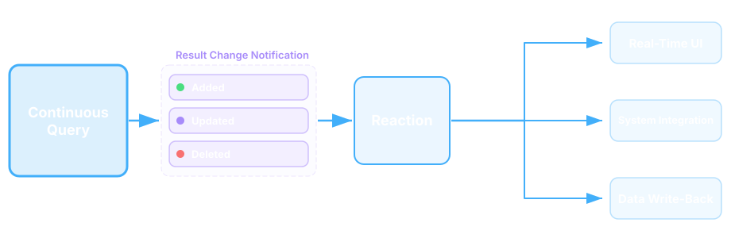

Detecting and Reacting to Change is Harder Than It Should Be
A Familiar Scenario
You have data spread across multiple systems
Data changes (or doesn't change when expected)
Your system needs to detect this and react
Quickly. Precisely. Reliably.
Example: Proactive Customer Care
A shipping carrier marks a delivery as "delayed" — your
e-commerce platform needs to identify affected customers,
check their loyalty tier, and offer compensation
before they complain
Example: Field Service Dispatch
Maintain a live set of technicians who are near an open
high-priority ticket, certified for the equipment, and not
already dispatched — across GPS, ticketing, HR, and
dispatch systems
Example: AI Support Agent
A customer calls about a missing order. Your AI support agent
searches its knowledge base — but the embeddings were last
refreshed overnight, so it doesn't know the order was
rerouted two hours ago. The agent confidently gives
the wrong answer.
Ooops. What if the vector DB updated the moment the order status changed — not on the next batch run?
Sound Familiar?
These are all examples of Change-Driven Systems:
Systems that take action in response to a meaningful change —
or the absence of change — in relevant data.
A problem you've probably already "solved"...
... more than once!!
Example: Trading Application
Let's take a quick look at a change-driven system
Market Data
Stock Portfolio
Order Management
Stock Watchlist
Sector Overviews
Top Gainers / Losers
All Dynamic !!!
Trading Application: How to ...
... get changes from the source systems?
... integrate changing data from multiple sources?
... update all dependencies when there is a change?
... update the Trading Web App in real time?
... support multiple concurrent users?
... re-sync if the sources or my system goes down?
Oh no...???
... not again !!!
Building Change-Driven Systems
How Teams Do It Today
Three Common Approaches
Polling
Analytics Platforms
Event Stream Processing
Approach 1: Polling
Your system queries the data store periodically, compares the results to what it saw previously, and acts on the differences.

Polling a database is like opening the fridge every five seconds to see if new food appeared
Approach 2: Analytics Platforms
Bring data together in a central analytics platform where rich queries and dashboards can surface meaningful conditions across all your data.
Using analytics for real-time detection is like reading yesterday's newspaper to find out if your house is on fire
Approach 3: Event Stream Processing
CDC reads row-level changes from the data store and streams them to an event processing engine for filtering, joining, transformation, and change detection.

Setting up event stream processing to detect a data change is like hiring an entire orchestra when you just need someone to ring a doorbell
The Problems
Introduce significant complexity for both Dev and Ops; focus on plumbing not the business solution; often result in one-off brittle solutions...
Polling
Poll interval defines detection lag
Many polls return nothing
You own state & restarts
Every use case = new loop
Doesn't scale
Analytics
Cost prohibitive
Querying stale data
ETL lag: minutes to hours
Pipelines & schema sync
Insight, not reaction
Event Stream
Heavy infrastructure stack
Consumer owns all logic
Cross-source joins are hard
Schema evolution ripples
Weeks to production
I just want to know if something changed ?!
There has to be an easier way !
What we really need is something that is:
Purpose-built for change-driven architectures
Simple to use — no-code, low-code, and full-code options
Detects change and takes action in one unified platform — minimal infrastructure, integrates with data where it already lives
Rich connector ecosystem with a built-in extensibility model
Open source, community-driven, no vendor lock-in.
Introducing
What is Drasi?
Data change processing platform for building change-driven solutions.
Open Source · Apache 2.0 · CNCF Sandbox
Core Concepts
Three simple concepts are the foundation of everything Drasi does

Sources
Manage connection (and reconnection) to data source
Receive / retrieve change events or mimic change feed
Transform change events to property graph node/relation updates
Send Source Change Events to subscribed Continuous Queries

Source Ecosystem
Connect to your existing data where it is
Relational
PostgreSQL
MySQL
SQL Server
Graph / Doc
Cosmos DB
Dataverse
Kubernetes
Stream
Event Hubs
HTTP
gRPC
Custom
+ Click to add
Continuous Query
Subscribe to one or more Sources and receive Source Change Events
Declarative openCypher or GQL queries describe the change you are interest in
Maintain perpetually accurate Result Set
Send Result Change Notifications containing diff to subscribed Reactions

Example: Continuous Query
All stock prices
MATCH (sp:stock_prices)
RETURN sp.symbol AS symbol,
sp.price AS price,
sp.previous_close AS previousClose,
((sp.price - sp.previous_close) / sp.previous_close * 100) AS changePercent
symbol
price
previousClose
changePercent
AAPL
189.42
187.10
+1.24
MSFT
412.35
415.80
-0.83
NVDA
875.60
860.20
+1.79
Example: Continuous Query
All stocks with a price higher than yesterday's close
MATCH (s:stocks)-[:HAS_PRICE]->(sp:stock_prices)
WHERE sp.price > sp.previous_close
RETURN s.symbol AS symbol,
s.name AS name,
sp.price AS price,
sp.previous_close AS previousClose,
((sp.price - sp.previous_close) / sp.previous_close * 100) AS changePercent
symbol
name
price
previousClose
changePercent
AAPL
Apple Inc.
189.42
187.10
+1.24
NVDA
NVIDIA Corp.
875.60
860.20
+1.79
AMZN
Amazon.com
182.75
180.90
+1.02
Example: Continuous Query
All market sectors
MATCH (s:stocks)-[:HAS_PRICE]->(sp:stock_prices)
RETURN s.sector AS sector,
count(s) AS stockCount,
avg((sp.price - sp.previous_close) / sp.previous_close * 100) AS avgChangePercent,
sum(sp.volume) AS totalVolume,
min(sp.price) AS minPrice,
max(sp.price) AS maxPrice
sector
stockCount
avgChangePercent
totalVolume
minPrice
maxPrice
Technology
8
+1.35
42,150,000
142.30
875.60
Healthcare
5
-0.42
18,720,000
89.15
485.20
Finance
6
+0.78
31,400,000
52.40
312.85
Reactions
Subscribe to one or more Continuous Queries
Receive Result Change Notifications
Act based on Result Change type: Added, Updated, or Deleted

Reaction Ecosystem
Take action using existing systems
Push
Webhooks
SSE
gRPC
SignalR
Write
PostgreSQL
MySQL
MS SQL Server
Gremlin
Qdrant
Integrate
Debezium
Event Grid
Dapr
Grafana
Custom
+ Click to add
Advanced Capabilities
Highly Extensible
Sources
Reactions
Bootstrap Providers
State Stores
Index Providers
Identity Providers
Middleware Pipeline
Allow Continuous Queries to transform & enrich Source Change Events before processing
JQ expression transformations
Expand nested arrays
Decode strings, Relabel, Promote fields
Multi-Source Queries
Join across heterogeneous systems in one query
Synthetic relationships between databases
No shared schema or event bus
Absence of Change
Detect what didn't happen
trueFor — condition persists for duration
trueLater — condition is true at a specific time
trueUntil — condition remains true until a specific time
Temporal Functionality
Compare a changed element with its previous values
Process a range of previous values for the changed element
Get the Continuous Query result as it was at any point in time
Change-driven UI
Drive UI content from Continuous Queries
Drop in React and Vue components display Continuous Query Result